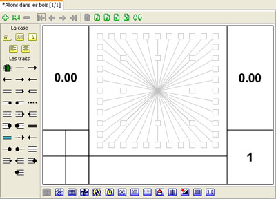

JvRoad
Manuel de Format
Création d'un road book: Supprimer une case
Choisir
Supprimer Case
dans le menu
Edition
pour supprimer la case courante.

Comme l'indique l'onglet à présent notre road book comporte une seule case et l'éditeur est positionné sur cette unique case.
<< Etape précédente
-
Etape suivante >>